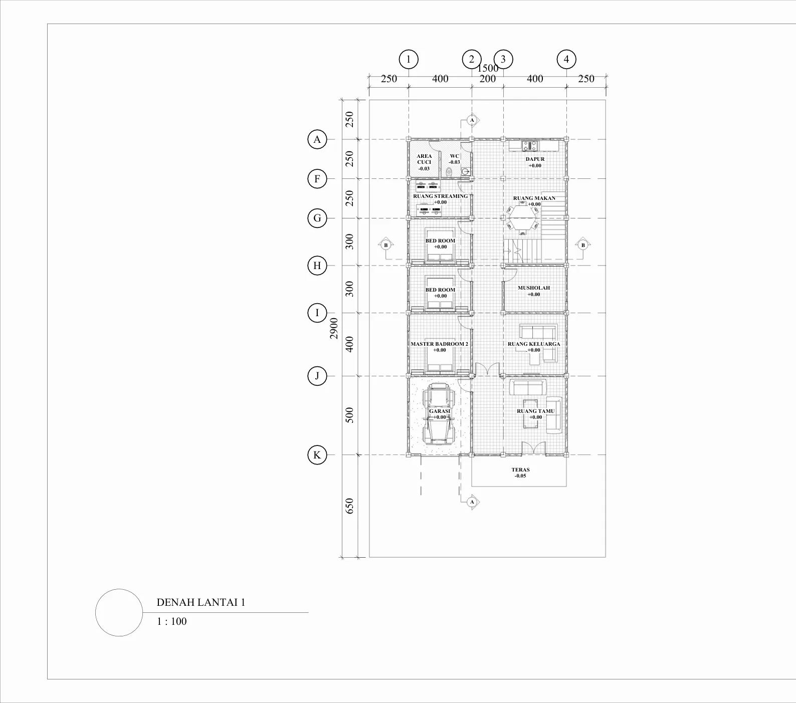
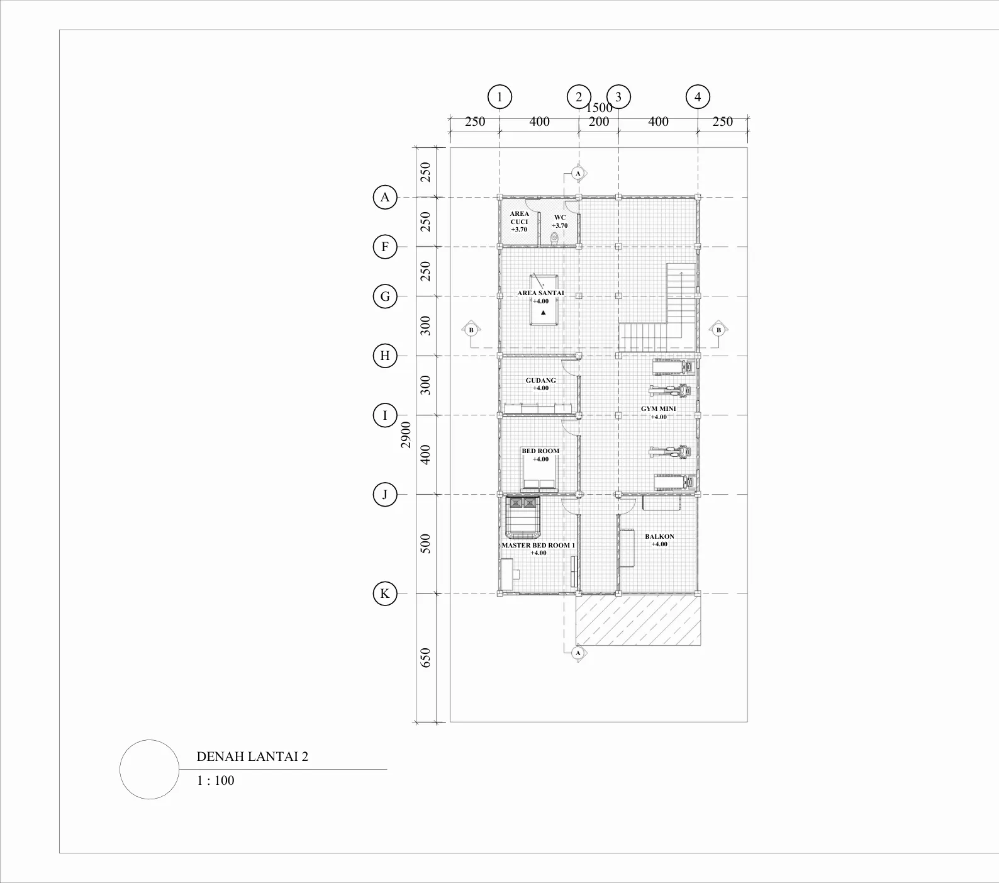
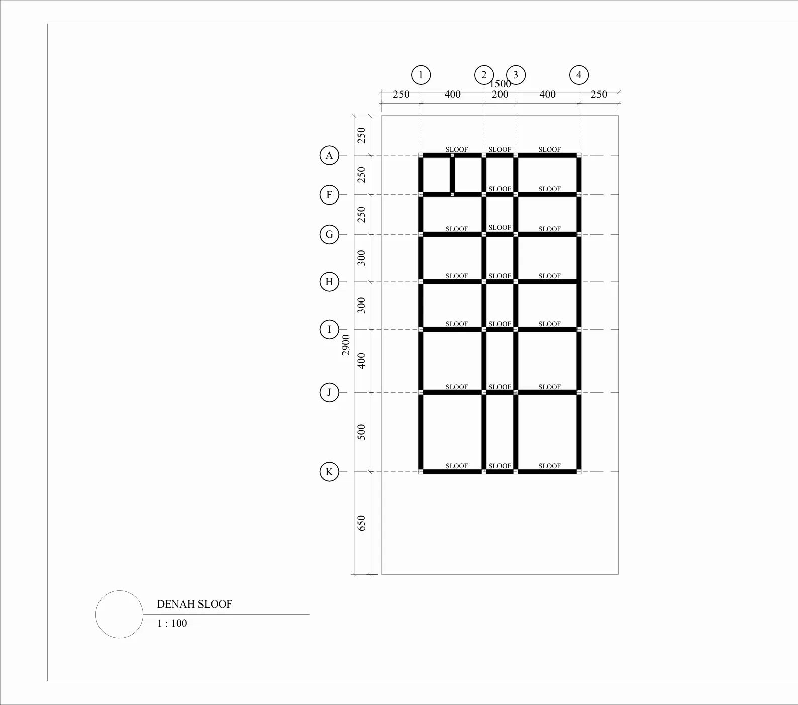
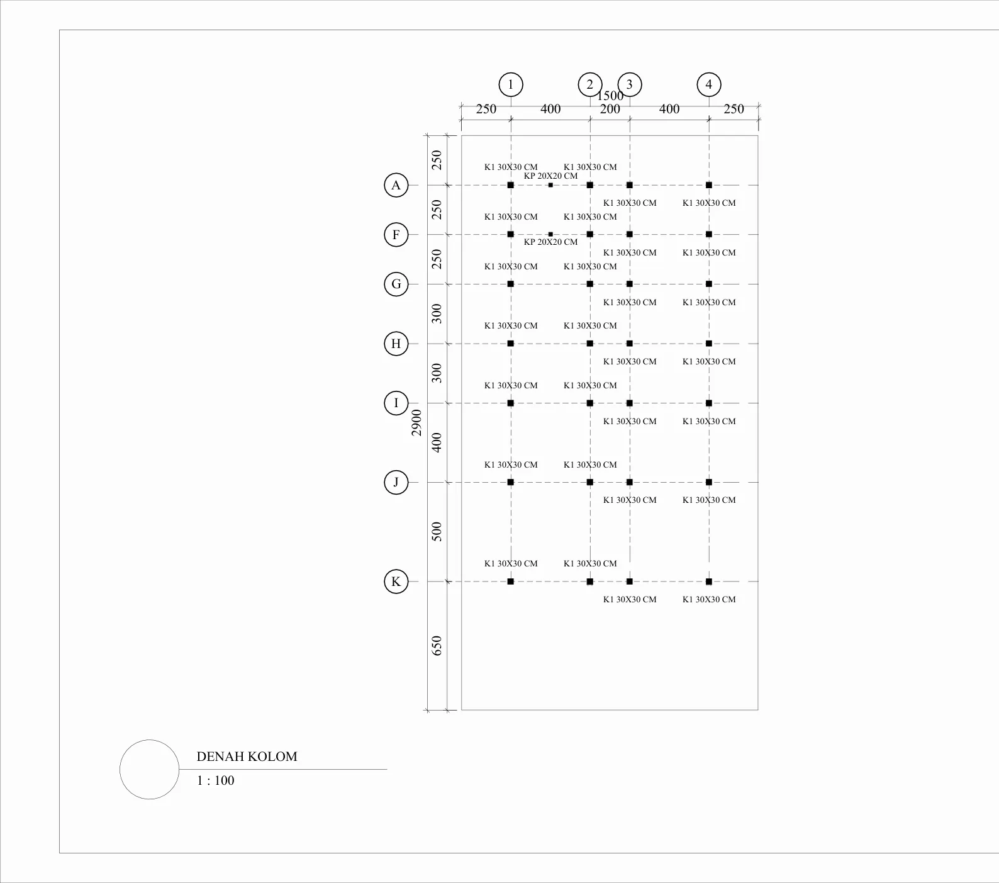
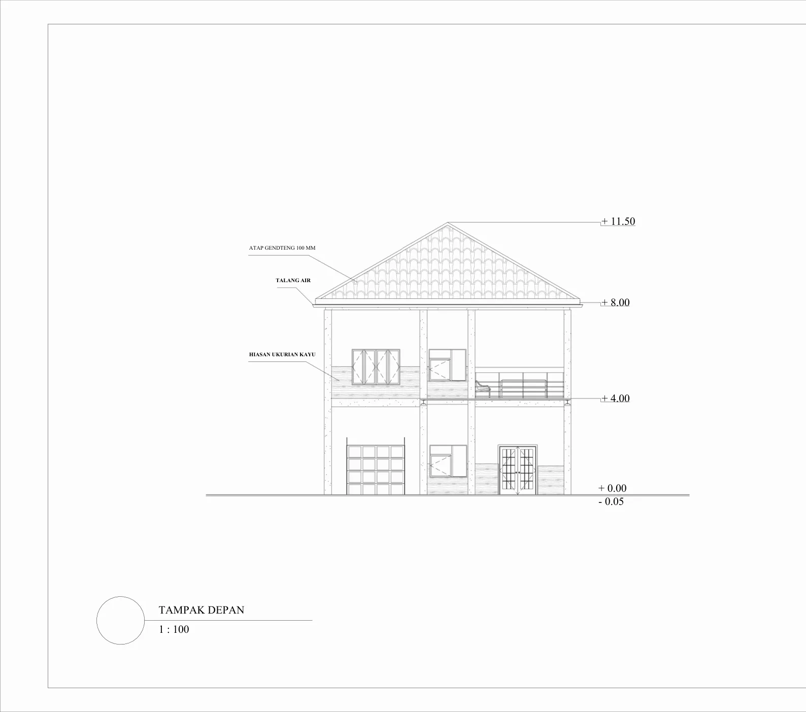
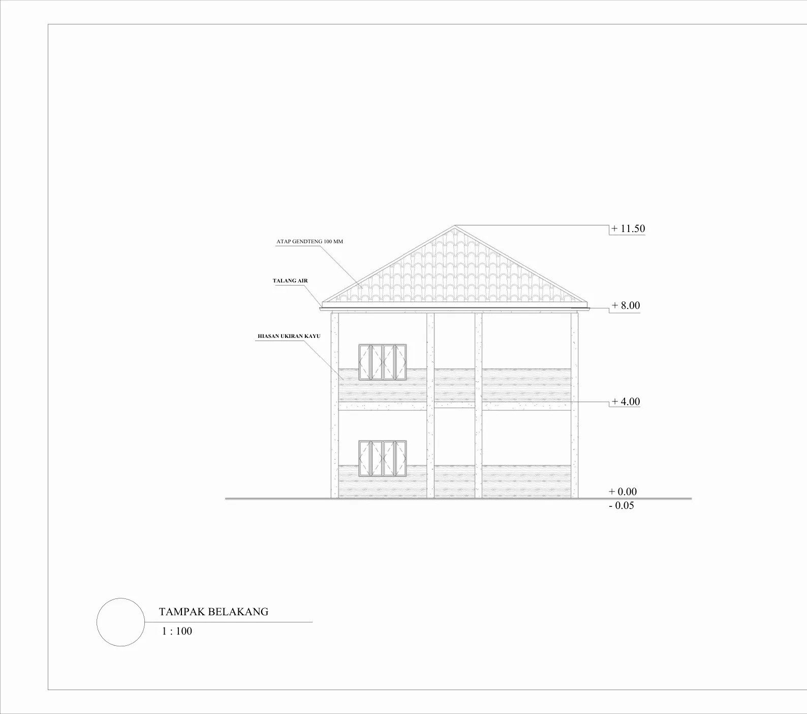

RAB dan jadwal rumah tinggal 2 lantai
Rencana anggaran biaya dan kurva S rumah tinggal dua lantai 400 m², dari gambar DED sampai volume, analisis harga satuan AHSP 2026, BOQ, WBS, dan jadwal.
- Acara atau tempat
- Tugas besar Perencanaan, Biaya dan Penjadwalan Proyek, Universitas Jambi
- Tahun
- 2026
- Peran saya
- Penyusun (tugas individu): gambar DED, volume, RAB, dan jadwal.
- Hasil
- Rp2.139.807.000, 24 minggu
- Perangkat lunak
- Microsoft Excel, Autodesk Revit, AutoCAD
- Jenis
- Perhitungan, Gambar/DED
Dari gambar ke anggaran
Item pekerjaan diturunkan dari gambar DED, volumenya dihitung dengan lembar backup data, lalu dikalikan harga satuan dari AHSP 2026 (SE DJBK Nomor 47 Tahun 2026). Total sudah termasuk contingency 5 % dan PPN 11 %.
| Lembar | Isi |
|---|---|
| I–VIII | RAB per pekerjaan: persiapan, tanah dan urugan, struktur dan pembesian, lantai, rangka dan plafon, kusen, atap, dinding |
| AHSP 2026, AHSP INDEX | Analisis harga satuan dan indeks bahan, upah, alat |
| WBS | Struktur rincian kerja |
| BACKUP DATA, REKAPITULASI VOLUME | Hitungan volume tiap item dari gambar |
| BOQ | Daftar kuantitas |
| KURVA S | Bar chart dan kurva S 24 minggu |












Jadwal dan kurva S
Bobot tiap item disebar ke minggu pelaksanaannya; kumulatifnya membentuk kurva S yang mencapai 100 % di minggu ke-24.
Lihat data
| Seri | Minggu ke- | Bobot kumulatif (%) |
|---|---|---|
| Rencana | 1 | 0,34 |
| Rencana | 2 | 1,72 |
| Rencana | 3 | 2,75 |
| Rencana | 4 | 3,78 |
| Rencana | 5 | 7,15 |
| Rencana | 6 | 12,73 |
| Rencana | 7 | 15,97 |
| Rencana | 8 | 22,14 |
| Rencana | 9 | 25,08 |
| Rencana | 10 | 30,98 |
| Rencana | 11 | 37,35 |
| Rencana | 12 | 44,63 |
| Rencana | 13 | 48,97 |
| Rencana | 14 | 53,31 |
| Rencana | 15 | 58,19 |
| Rencana | 16 | 63,07 |
| Rencana | 17 | 69,94 |
| Rencana | 18 | 76,82 |
| Rencana | 19 | 81,65 |
| Rencana | 20 | 86,48 |
| Rencana | 21 | 89,86 |
| Rencana | 22 | 93,24 |
| Rencana | 23 | 96,62 |
| Rencana | 24 | 100 |
Lihat data
| Bobot | |
|---|---|
| Persiapan | 0,69 |
| Tanah dan Pondasi | 4,12 |
| Struktur dan Pembesian | 46,71 |
| Lantai | 8,16 |
| Rangka dan Plafond | 3,70 |
| Kusen, Pintu, dan Jendela | 8,73 |
| Atap | 0,86 |
| Dinding dan Finishing | 27,03 |
Hasil
| Total RAB (termasuk contingency 5 % dan PPN 11 %) | Rp2.139.807.000 |
|---|---|
| Luas bangunan | 10 × 20 m × 2 lantai = 400 m² |
| Durasi | 24 minggu |
Kop gambar DED dipotong dari pratinjau.